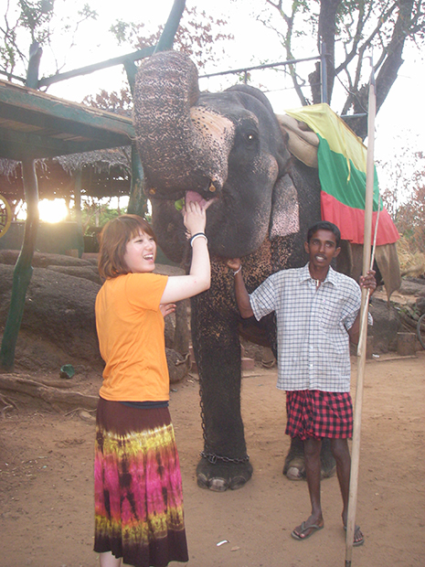
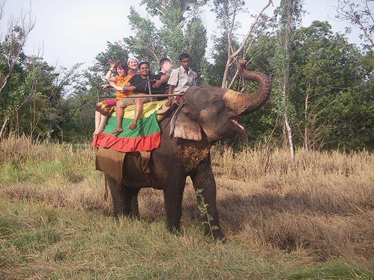
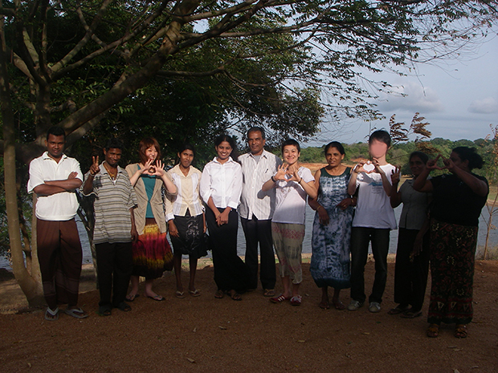
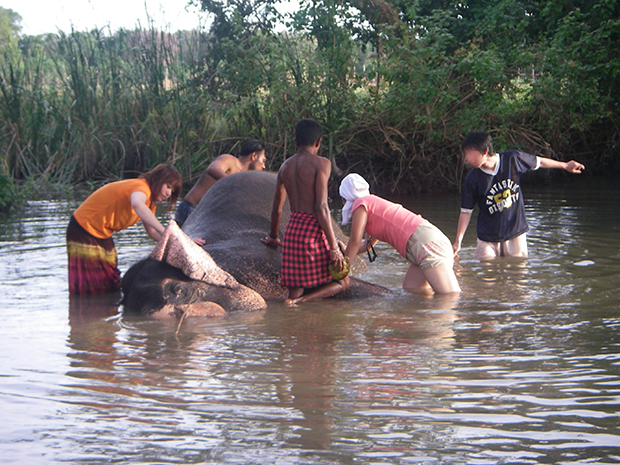
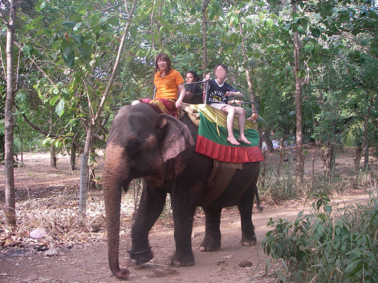
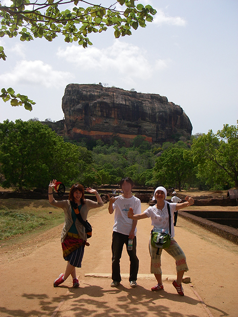
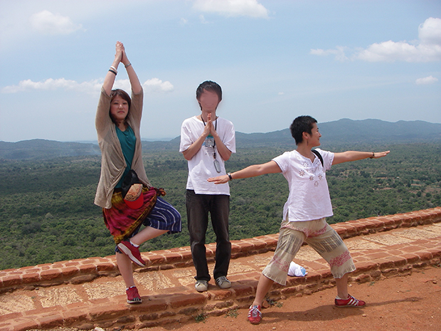

「海外旅行が初めてだったので１人で現地まで行けるのか少し不安でした。安さでこのプログラムに決めたのですが、すごいぎりぎりに思いついたため、だいぶ迷惑をかけてしまってすいません。
いろいろ対応してもらって助かりました。ありがとうございました。
現地受入団体の人は、日本語ペラペラだし、なんか親しみやすかったです。レッスンでは、宿題はあんまり出してもらわなかったのですが家族と遊びたかったからちょうどよかったです。
教師の方もなんだか親しみやすく、先生の家にまでお邪魔さしてくれて、友達になれた気がしてうれしかったです。
ホームステイは勉強になったというよりは、ただ単純に楽しかった感の方が強いです。私の目的があまり勉強的ではないからかもしれないですが、すごい楽しかったです。
ホストファミリーはすごい優しくてたぶんたくさん気をつかわしてしまったと思うけど、私はいごこちがよくて仲良くなれたと思うし、もっといたかったです。

低開発村に行って、こういうところに住んでいる人もいるんだと、なんか実際に見るとジーンとしました。 こういう生活も楽しそうだと感じました。
同行した人はみんないい人で、皆でワイワイするのも楽しかったです。
はっきりいって、スリランカに何の知識もなく行ったので、すべてがはじめてでした。でもDVDがあったり、街中で『お金ください。』って（物乞いの）人がいたり、いろいろなんだなぁと思いました。
ゾウのボランティアがとても楽しかったです。もっと現地の人と親しくなれたらいいと思いました。津波救済活動をしたかったけど、実際学生には金的にちょっときついと思いました。


向こうでサーフィンとかのスクールに１日行きたかったけど、無計画だったからあっという間に時間が過ぎてしまいました。またスリランカへ行ってみたいです。
もしこのプログラムを使うなら、またこれくらいの値段でもっといろいろな国に行けたらいいなと思います。そしたら２週間ずつくらい各国を数ヶ国行ってみたいです。
ホストファミリーもファミリーの親戚も英語の先生とその家族の方々、空き地でクリケットしてた青年達とか、会ったみんなによくしてもらえて、私の簡単な単語だけの会話でもあきらめないで快くたくさんしゃべってくれて、すっかり友達になった気分で、すごい楽しかったです。
私ビビりのひとみしりなんですけど、これからもっといろんなとこ行っていろんなことしてみたいなとか思いました☆
会社のみなさまにも遠い旅行の初めての私をいろいろ助けてくれてありがとうございました。お世話になりました。」


同時期にご参加の石川典子さま、Ｔ．Ｒさまと一緒に観光♪